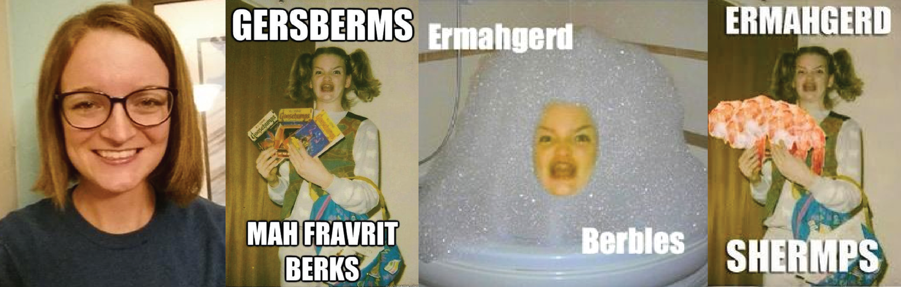
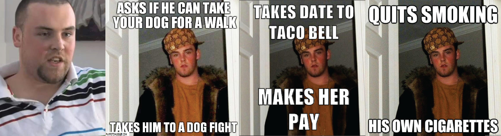
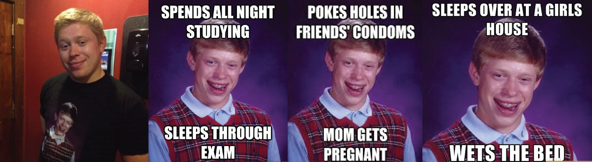
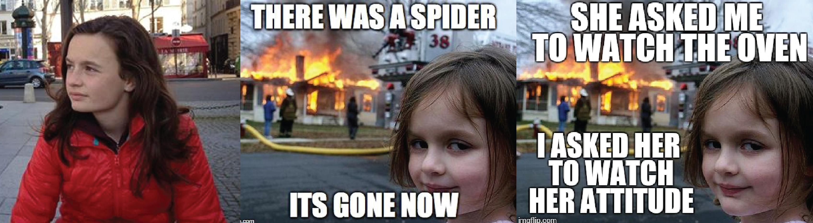

How Regular People Became Memes
How Regular People Became Memes
One of the weirder things that can happen to someone is to become the basis of a meme. A photograph of that person is taken out of context, remade and repurposed into something else, and a novel’s worth of captions rewrite who that person is, and what he or she is like.
Sometimes, memes are built on stock photos, using models who have agreed to let their images be used in ways they might not like. But many others come from regular non-models, from photographs of adults and children that have been offered up – almost universally by someone else – for lulz.
Anyways, you’ve probably wondered at one time or another, ‘who are these people’, and ‘what do they actually look like without the standard background and text overlay’? Well look no further…
ERMAGERD GIRL:
The ‘Goosebumps’ girl’s real name is Maggie Goldenberger, a nurse now working the in Phoenix area. 11 years old at the time, Goldenberger and her friends were into playing dress-up… and a meme was born.
According to Vanity Fair, “Goldenberger put on the vest, hoisted her hair up into intentionally dorky pigtails, brandished the chosen books, and pulled an intentionally hideous face for the camera. Normally, she hardly ever wore her retainer like she was supposed to, but it felt right for the character: she put it on for the shoot.”
Like the majority of the memes do, it all stared on Reddit when user Jeff Davis shared the infamous photo of Goldenberger he found while publicly browsing a gallary of various peoples pictures on Facebook. You can read the entire Vanity Fair story on their website.
SCUMBAG STEVE:
His real name is Blake Boston and the original photo was taken by his mom when he was 16. Blake is now a father and is currently pursuing his music career.
KnowYourMeme interviewed Boston four years ago, where he revealed that he was going to night school and working all day in order to better himself and care for his infant son.
“Oh the specific picture that’s really the original meme was taken when I was 16 looking into at my mom cuz she was torturing me for photos. Was I wrecked at the time? I don’t remember, but I sure as s*** thought I was a balla. Man, that coat was given to me in a swap for some s***. And yeah, I’m still in touch with the photographer. Hahahaha…and she’s coolin’ it on the pics now.”
BADLUCK BRIAN:
His real name is Kyle, and the original photo is from his 7th grade year book picture that his friend thought looked funny so he turned into a meme…. the rest is history. He now makes funny YouTube videos and also has his own Facebook page.
Today, he looks different from those school photos. His hair is shorter, and he has long since been rid of braces. The most recognizable and entertaining aspect of the meme — the goofy smirk on Bad Luck Brian’s face — isn’t how Kyle normally smiles. That’s why it doesn’t bother him that all of the Internet is making fun of his face. The awkwardness of the photo was intentional. Without contorting his jawline and his eyes, he’s just Kyle. He rarely gets recognized by strangers.
DISASTER GIRL:
Since its creation in 2004, this hilarious image has become one of the internet’s most popular memes. ‘Disaster Girl’s real name is Zoe Roth, a 16-year-old from Lake Tahoe on the US east coast, and she’s spoken out for the first time about how the photo was created.
She was four years old in 2004 and was watching television with her brother Tristan one morning when her mum said a house down the street was on fire.
Her father, Dave Roth, quickly gathered his family and his new digital camera and went to check out the blaze. The whole street looked on as firefighters controlled the blaze, which was now well under control. “There was no danger or stress in the situation at all,” Dave told Refinery 29. “The kids and I walked around to see the fire from different angles. It was cool — something you don’t see every day.”
He took around 30 photos of his children watching the fire, then headed home to check them out. It was actually three years later that he uploaded one of the images of Zoe on photo sharing community Zooomr and titled it “Firestarter.”
Immediately, the comments started pouring in.